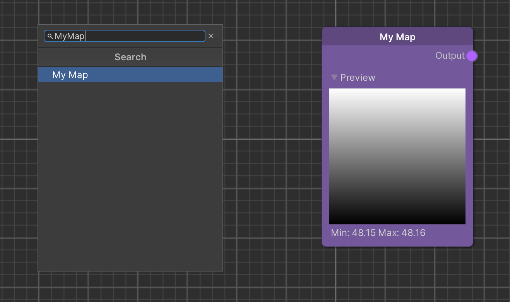

Custom Map Nodes
Although the Elastic SDK comes with a large number of Map nodes, you may find that you need one with custom behavior. All Map nodes have in common that their output is also a Map, i.e. a 2D array of float values whose resolution is defined in the Elastic Scene Generator.
The following code is a minimal example that encodes the latitude of every pixel into the Map. We will focus on the different steps involved in creating a custom Map node over the course of this lesson.
using System.Collections;
using Holoride.ElasticSDK;
using Holoride.ElasticSDK.Graph.Maps;
using UnityEngine;
public class MyMapNode : MapNode
{
public override IPipelineWorker GeneratePipelineWorker()
{
return new MyMapWorker(this);
}
private class MyMapWorker : MapWorker<MyMapNode>
{
public MyMapWorker(MyMapNode node)
: base(node,
provideDoubleBuffer: true,
provideCPUBuffer: true,
provideGPUBuffer: false) { }
public override IEnumerator Process(GenerationContext context)
{
yield return Utils.WaitForThread(() =>
{
int resolution = this.GenerationSettings.FilterResolution;
for (int x = 0; x < resolution; x++)
{
for (int z = 0; z < resolution; z++)
{
var uv = new Vector2((float)x / resolution, (float)z / resolution);
var geoCoordinate = context.Bounds.GeoCoordinateAtUV(uv, context.Pivot);
this.SetCPUWriteBufferValue(x, z, (float)geoCoordinate.Latitude);
}
}
});
}
}
}
Create a file containing the script as MyMapNode.cs within your Asset folder or rename all occurrences of the prefix MyMap according to your purpose. Now the node can be selected from the node creation menu in the holoride graph view.

Let us take a deeper look into what we just created:
public class MyMapNode : MapNode
{
public override IPipelineWorker GeneratePipelineWorker()
{
return new MyMapWorker(this);
}
private class MyMapWorker : MapWorker<MyMapNode>
{
//...
}
}
A node class generates a Worker object of the embedded Worker class. Internally, depending on the situation, multiple Workers generated from one node might exist at a time. One might be generated for an Elastic Scene Generator and another one for the node graph editor to show a preview. All nodes that have been created for the same consumer are arranged into a pipeline, the logical order in which the nodes are processed.
public MyMapWorker(MyMapNode node)
: base(node,
provideDoubleBuffer: true,
provideCPUBuffer: true,
provideGPUBuffer: false) { }
The constructor of our Worker takes four arguments:
- A reference to the node to access parameters set in the node graph.
- A bool that states whether to use a double buffer to ensure values can be read even if the Worker is currently processing an update.
- A bool that indicates that the node fills a CPU buffer.
- A bool that indicates that the node fills a GPU buffer additionally or alternatively.
Note
The GPU buffer represents a compute buffer a compute shader draws into, while the CPU buffer is an array in the memory. It depends on your algorithm which implementation is more efficient. Only in rare cases, e.g. when drawing sparse data like individual pixels, a CPU implementation is the better choice. However, a GPU implementation requires some boilerplate code.
For the sake of ease we will fill a CPU buffer in the following example.
public override IEnumerator Process(GenerationContext context)
{
yield return Utils.WaitForThread(() =>
{
//...
});
}
The process function is the heart of a node that updates with every pipeline iteration. It is called in a coroutine and can yield to distribute the workload over multiple frames. In this example we even outsource the computation to another thread. Keep in mind though, that most Unity operations cannot be called within a separate thread.
int resolution = this.GenerationSettings.FilterResolution;
for (int x = 0; x < resolution; x++)
{
for (int z = 0; z < resolution; z++)
{
///...
}
}
Inside our function we iterate over every pixel of the output Map. The pixel count in both dimensions (in Unity's x and z direction) is determined in the GenerationSettings class. These settings are shared by all nodes in a pipeline and won't change over time. Additionally, in this case the original value for the Filter Resolution setting is set on the Elastic Scene Generator component.
var uv = new Vector2((float)x / resolution, (float)z / resolution);
var geoCoordinate = context.InnerBounds.GeoCoordinateAtUV(uv, context.Pivot);
this.SetCPUWriteBufferValue(x, z, (float)geoCoordinate.Latitude);
The very core of the process function describes what happens to every pixel. In this case, we compute the UV coordinates
of the area the Map covers. Then, we use our GenerationContext object context to determine the geo coordinate on
the earth surface which corresponds to the Map coordinate at hand. In general, the GenerationContext class holds all
information that changes between pipeline iterations, such as the generation bounds which contain the range in latitude
and longitude direction. Finally, we use the latitude information of the geo coordinate and write it to the respective
CPU buffer position.
Moving On
Congratulations, you have completed the Code learning track! If you have not yet completed preceding learning tracks, consider to do so now to get deeper insights into the ElasticSDK environment and its features:
- Getting Started Learn about the setup process and the key components of the Elastic SDK.
- World Creation Learn how to create elastic environments utilizing key graph features.